Tackling a crease pattern
Written on
As a test post for this site, I thought it might be nice to write about origami a little: it is a hobby I have practiced almost longer than any other hobby I have (longer than karate, even), but I usually only show the end result to other people - namely, a nice origami model. Since I recently figured out a thing or two about crease patterns, I thought it might be nice to document the process of working through one.
This post is not intended as an instruction to fold this particular model, but more as a documentation of how folding such a model works. I will expand a little beyond what is necessary on things that I think are neat (such as dividing a paper into a grid of arbitrary size).
I have completed a crane, like, maybe once. What is a crease pattern?
In origami, the most accessible and, arguably, common form of delivering instructions for a particular model is through diagrams. Diagrams are step by step instructions on how to fold a model, starting from a sheet of paper. Sometimes, it is not possible to deliver these step-by-step instructions, such as when the model is too complex to fold in a sequence of neat steps, or when the artist simply doesn't have time to create a 300+ step instruction on how to fold a model.
Enter: the crease pattern. If you have a folded origami model, like this crane:
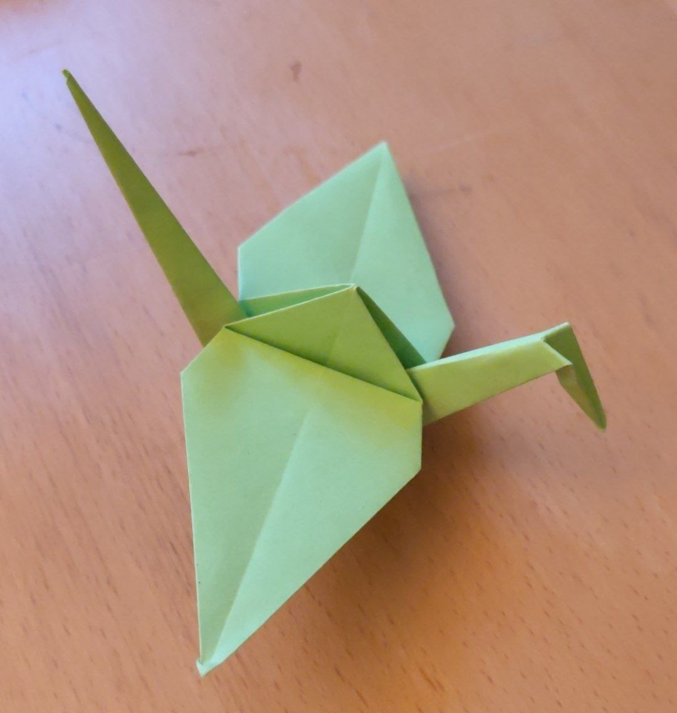
and you unfold it, you get a square with folding lines on it:
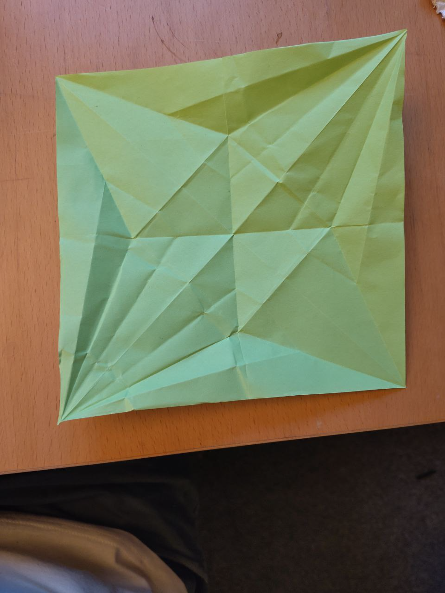
This is what you call a crease pattern. Essentially, crease patterns are very minimal instructions on how to get to a certain model.The objective of folding a crease pattern is to a flat folded package of paper with a bunch of flaps, also called a base. Once you reach a (correctly) flat folded package, you get to put your creativity to use to finish the model.
Why would I want to fold from a crease pattern?
Folding from a crease pattern is a more involved process than folding from a diagram. To my mind, there are multiple advantages of folding from a crease pattern:
-
Precision: Because I have to create most of the folds in advance, I get to be more precise in creasing than you can be in diagrams. Additionally, because by collapsing the model you gain insight into how all the flaps are arranged, it is easier to hide and/or correct mistakes in a neat way.
-
More models available: As mentioned, crease patterns are easier and faster to create and distribute than diagrams, which means that there is a lot more cool stuff to fold out there.
-
More creative freedom: When folding from a diagram, the artist often takes you by the hand when it comes to finishing the model from the base on out. Folding from crease patterns leaves you with only a base, which means that you really have to be a little more creative to finish the model.
-
Fun puzzle: Origami as a whole can really get me into a state of flow, but crease patterns are like puzzles built on top of that - this particular combination is extremely stimulating to me.
Working through a crease pattern
Step 1. Picking and thinking about a model
I generally enjoy folding complex models, in particular bugs. There is something alien about them, and they usually have a lot of small flaps that I enjoy folding. I like the proportions on this cicada nymph, designed by Robert J. Lang,
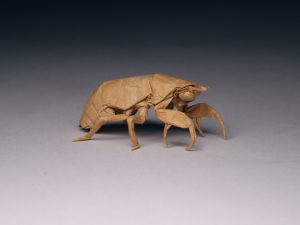
Cute bug eyes! There is a crease pattern publicly available of this model. This is what it looks like: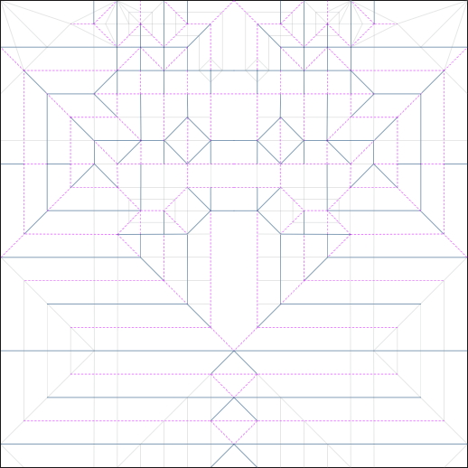
In this crease pattern, you get information about the orientation of the creases, by which I mean whether they are mountain or valley folds. In this crease pattern, the valley folds are purple/dotted, and the mountain folds are blue and solid. There is a whole lot of nice math about how many mountain and valley folds there need to be at a particular crossing of folds in order for the model to lie flat, but that is a whole other blog post.
{kind=link}
{kind=link}
Let's try to map the crease pattern to the model to get some sense of what goes where. The mapping is primarily based on some experience folding models, and some spatial insight.
Looking at the crease pattern, I notice that we have less details at the bottom of the crease pattern, and some more details at the top. So probably the small flaps of the head should correspond to the top of the model, and since legs tend to be big flaps they will probably come from the bottom. Also, there is the vertical 'empty' bit in the middle of the crease pattern, which is typically used to give the model some width. So I would say that the crease pattern maps to the finished model like this (excuse my GIMP):
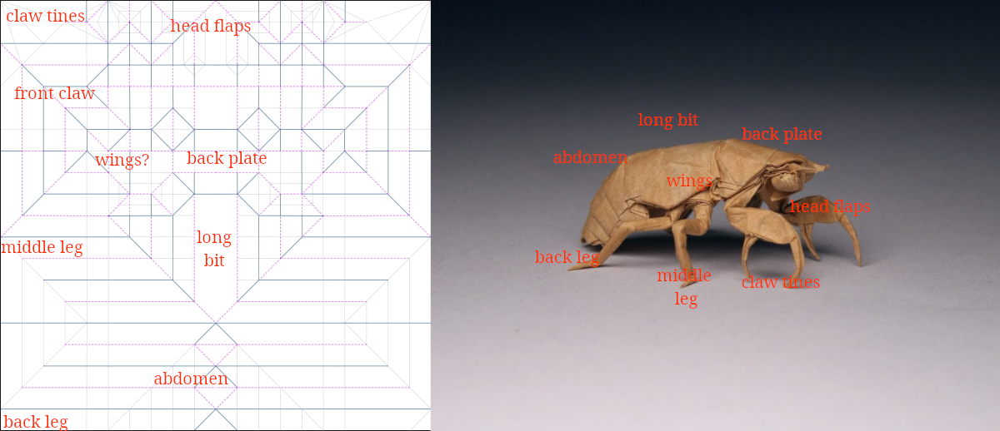
where the blue lines are the so-called "axes" of the model. There are several parts that I don't quite know what to do with just yet. For instance, we have the abdomen divided in segments in the finished model, while the crease pattern does not have the creases to create this segmentation explicitly; this leads me to think that we might have to pull out the abdomen at some point: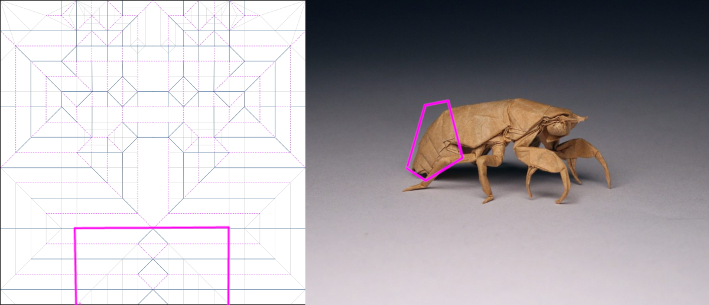
Then there are the wings, which have this 135 degree angle. So I suppose that must be this part of the crease pattern, but this is not obviously a flap to me,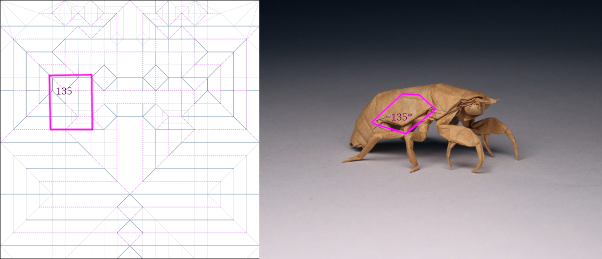
although the diamond-shaped creases arranged close by there do indicate that there might be.Step 2. Pre-creasing
The paper for this model should be fairly thin but not too thin, since the legs of the nymph are actually reasonably chonky. You can prepare some double tissue paper yourself pretty easily, but I have found that my local grocery store has a stack of (free!) brown packing paper intended for flower wrapping. It is not the prettiest, but it works amazingly well for test-folding models.
{kind=link}
The model I picked is nicely aligned on a grid. This is what is called a box-pleated model, which means that most of the creases in this model are (mostly) orthogonal to each other, or at 45 degrees. There are of course exceptions, but the basic structure of the model follows this logic. The process of folding a box-pleated model such as this one is therefore fairly straightforward:
- Fold grid
- Fold diagonals
- Collapse
- Shape
The grid
Since we are folding on a grid, an important part of starting to fold a box-pleated model is folding that grid. From now on, we will refer to one grid length as a unit:
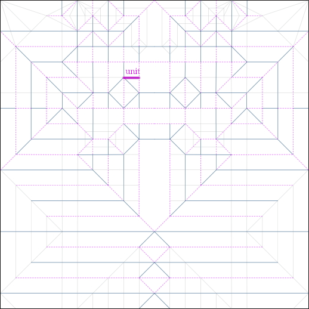
Counting out the grid, we need 20 by 20 units. Folding papers in half is really easy, so it is generally easiest if grids are powers of 2. Obviously 20 is not a power of 2, so we need a geometrical trick.We want to find the point on the paper that divides the paper into two parts, of which at least one is a power of 2, because we can fold those really easily. Suppose the amount of units we want on our grid is \(x\). In our case, \(x=20\), but it can be any natural number. We find some \(p=2^n\) such that \(x/2 < p\) - ideally you just pick whatever \(2^n\) is closest to \(x\).
The first step is dividing the paper into \(p\) segments by halving. Then, we draw two diagonals, which gives us these triangles with proportions \((x-p):p\), which means that their heights are also \((x-p):p\)
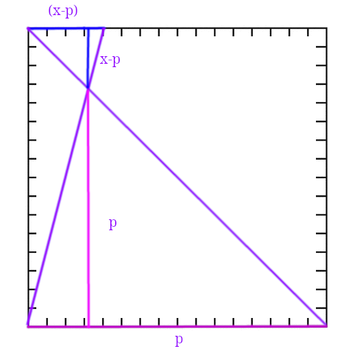
So, if we mark the intersection of these diagonals, we simply divide the larger height into p units (which is easy, because we picked a nicely foldable power of 2), and we can use those grid lines to divide the smaller height into \((x-p)\).Sometimes, as in our case, this can be simplified a little. We have \(x=20\), which means that the closest power of 2 larger than \(x/2\) is 16. If we follow these steps, we have two triangles with proportions 4:16 - we can simply reduce that to 1:4, which saves us a whole lot of creasing.
The diagonals (at 45 degrees)
Once the grid has been folded, the diagonals are a matter of counting and folding. There are not really any special tricks to 45 degree diagonals; they are all just the diagonals of squares of varying sizes. In general, it is a good idea to respect the orientation of the creases if the diagonals are those of size-1 units.
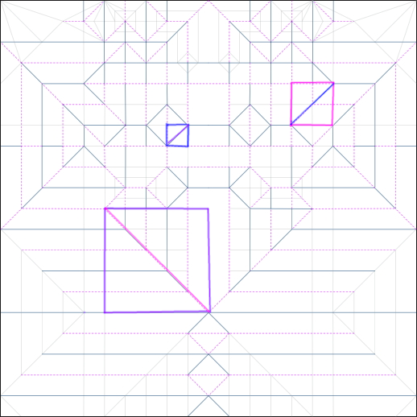
Additional creases
There are some creases at the top of the model that are a bit trickier, for instance, these half-unit creases, which are also found in the middle of the model:
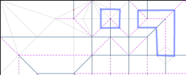
and these diagonals, which actually are partial diagonals of 2 by 1 rectangles (or diagonals with slope 0.5, whichever you like):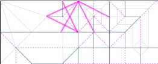
and these diagonals, which are diagonals of 3 by 1 rectangles:
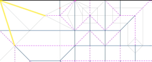
Once all the pre-creasing steps are done, it is time to collapse the model.
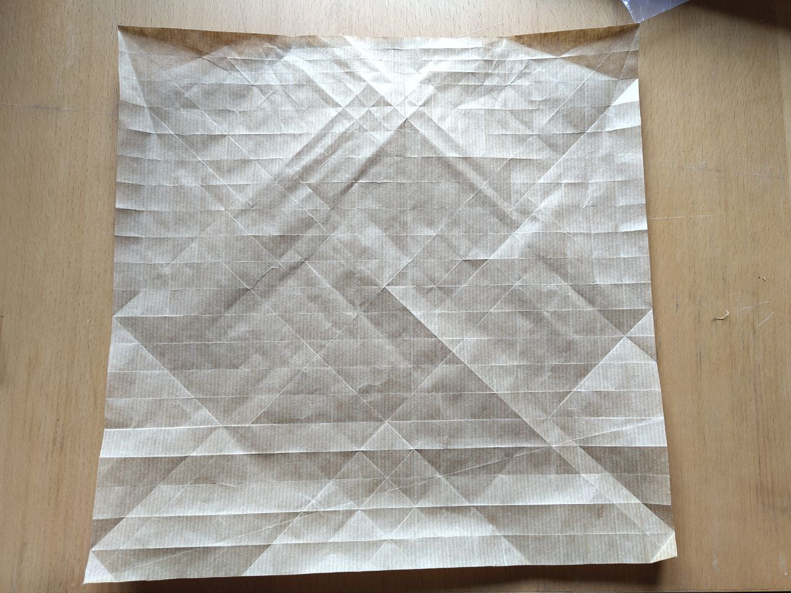
Step 3. Collapsing
Collapsing the model is more or less like taking an unfolded map and trying to fold it back up in the way it has been folded initially. There are methods to do this in a better "step-by-step" fashion than what I usually do, but I am the type of person to only RTFM if I cannot figure it out, so I have not gotten around to that.
I usually like to start at less detailed parts of the model:
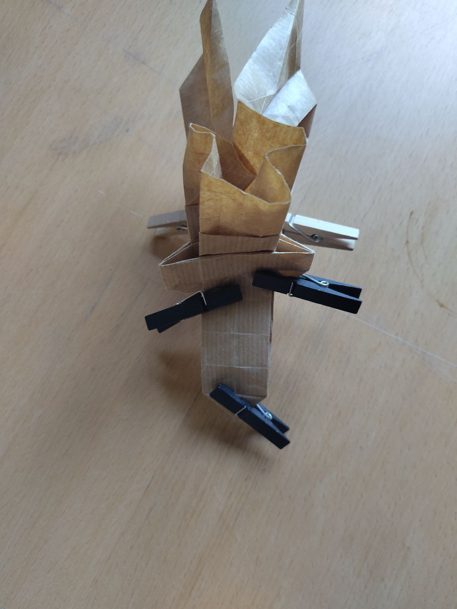
Then the fiddly bits are a bit easier to arrange, usually. This is what I think should be the finished base: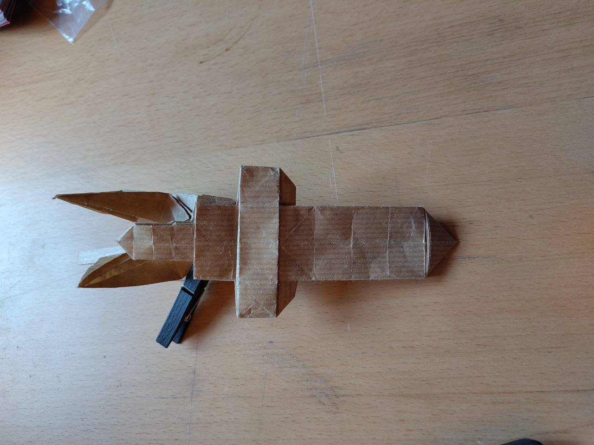
Step 4. Finishing
So, from the finished base it should be fairly obvious that this ain't no cicada nymph just yet. Usually, most of the time I spend on completing a model is spent on shaping it into something aesthetically pleasing.
In origami, you're not really supposed to use glue to stick things together. However, there is some glue-use tolerated here and there, particularly when it comes to sizing (or stiffening) the paper. As such, I use a mixture of thinned PVA glue and water to carefully dampen parts of the model and let them dry in shape over the course of several hours.
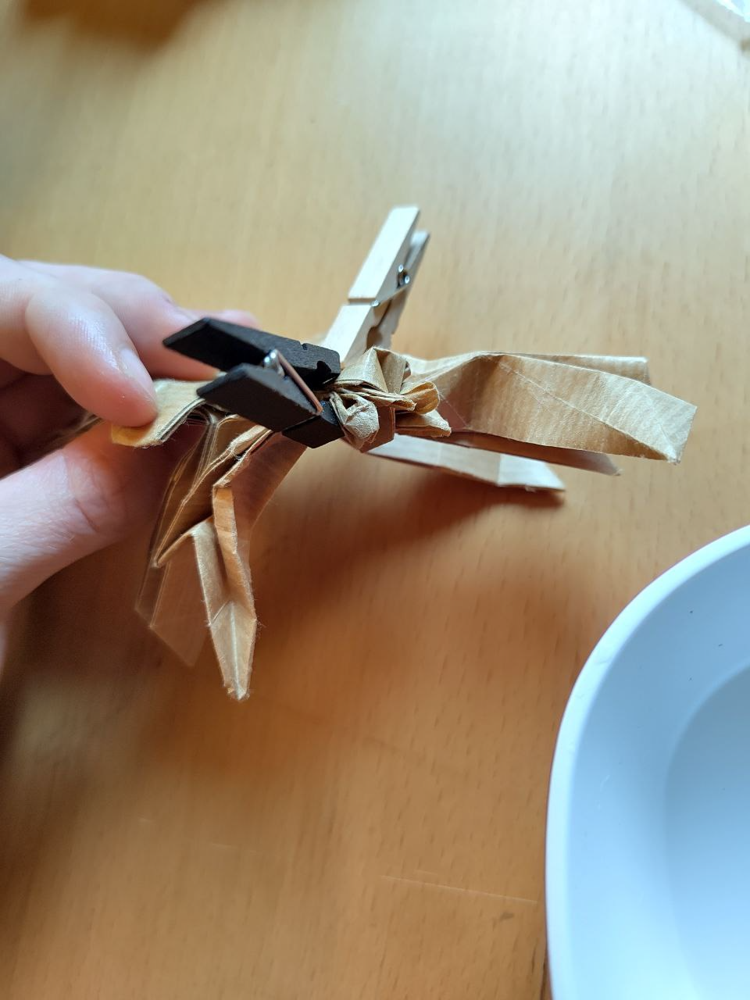
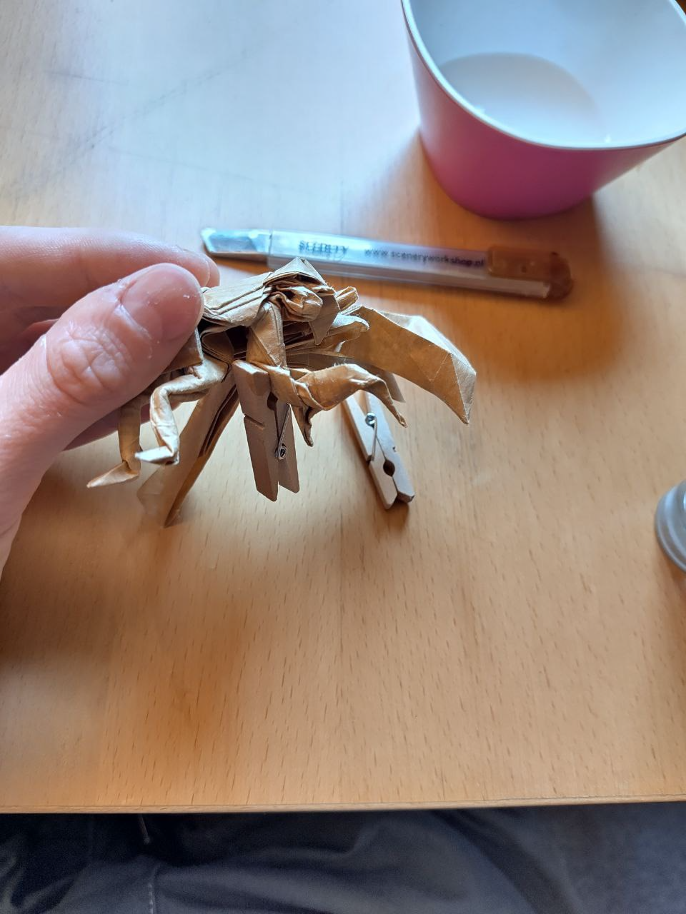
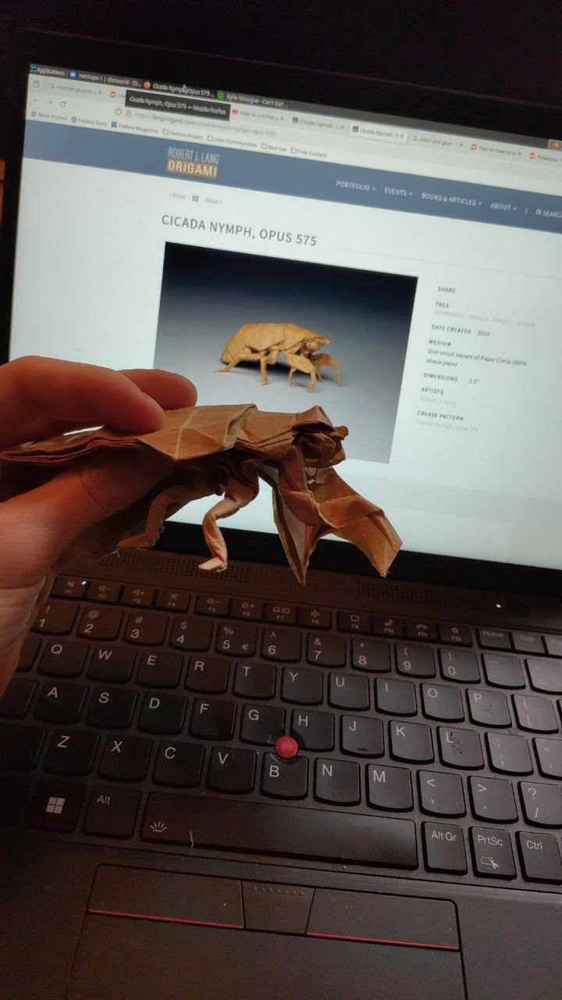
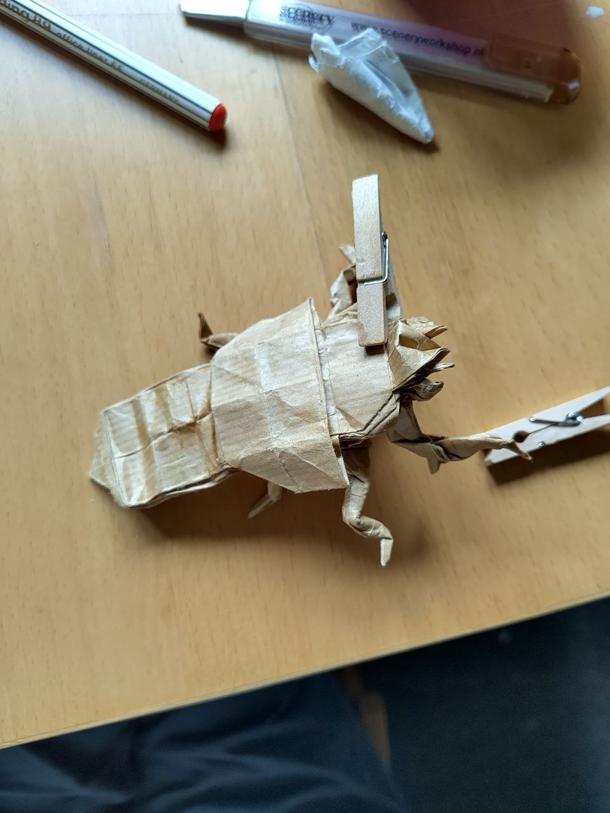
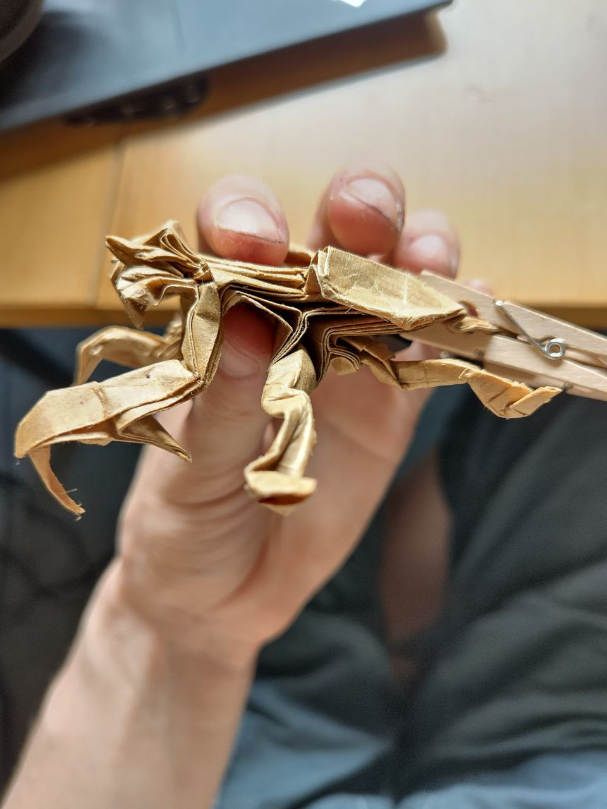
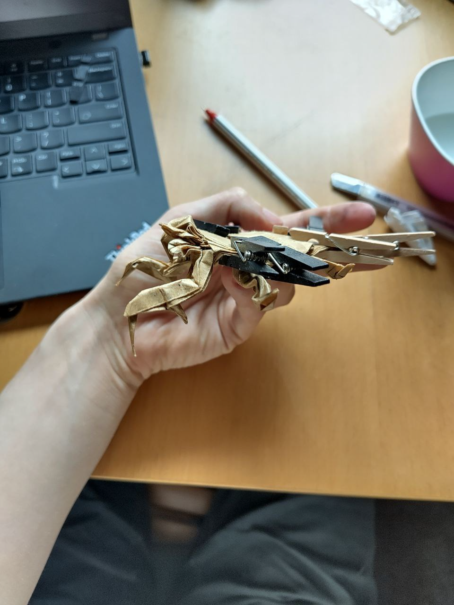
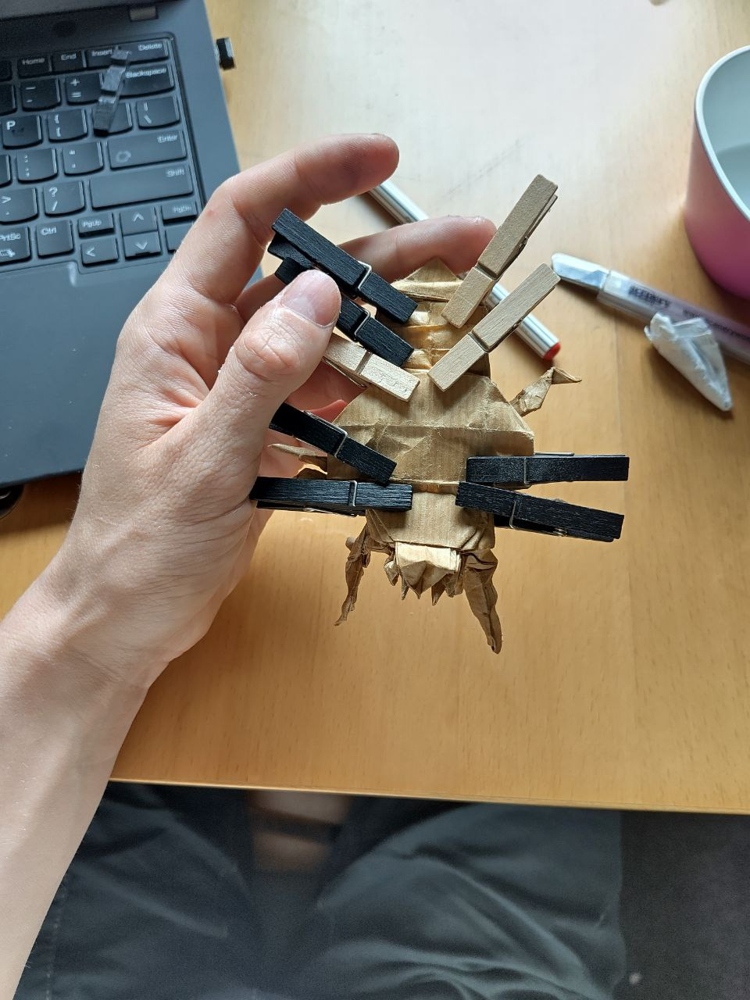
After a few rounds of shaping, this looks pretty close, but I don't like how little volume the abdomen has: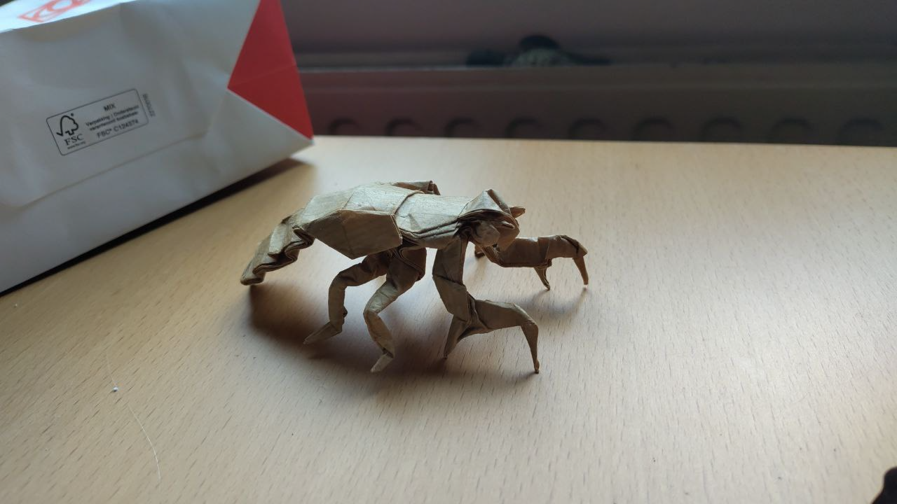
I probably made some mistake, but there is not really any part of the crease pattern that allows you to create the segments on the butt in a neat way as far as I can see. As I mentioned earlier in Step 1, one option is pulling out a really thick layer of paper into segments, but that ended up quite ugly (which might be a skill issue on my end), so I instead pleated the thick flaps into segments as well:
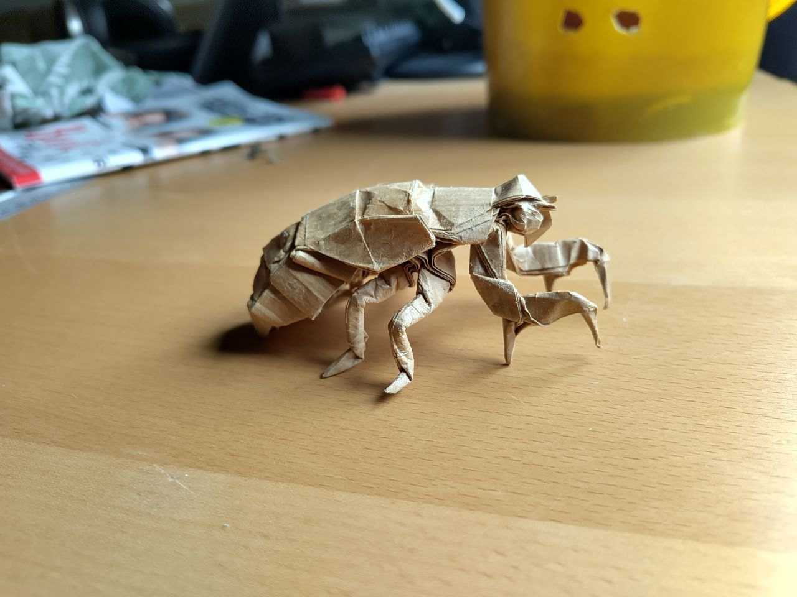
I am pretty happy with this shape, so: Cicada Nymph (opus 575), designed by Robert J. Lang, folded by me!